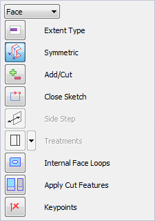
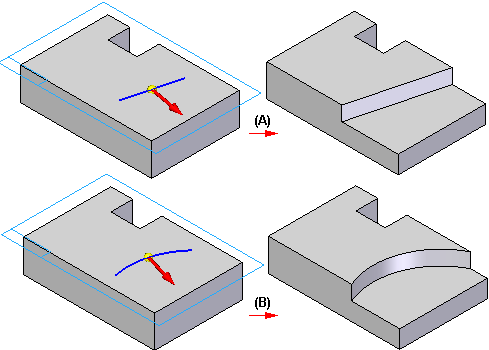
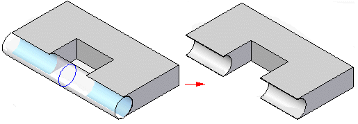
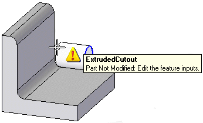

Sketch-based synchronous features
Sketch-based feature workflow
All sketch-based features are constructed with similar workflows. For example, when you construct an extrude feature using an open sketch, the Extrude command bar guides you through the steps described below:

-
Sketch Step—Select an existing sketch that you drew earlier.

-
Side Step—Define the side of the sketch you want to add material to by positioning the cursor so that the directional arrow points towards where the material is to be added. The Side Step is skipped if you use a closed sketch.

-
Extent Step—Define the extent of the material to add with the cursor (A) or by typing a value in the command bar (B). You can also use keypoints on another feature or another part in the assembly to define the extent for a feature. For details, see the section, Using Keypoints to Define Extents.

-
(Optional) Treatment Step—Define the crown or draft angle treatment you want for the feature. For details, see Applying Draft Angle and Crowning to Features.
-
Finish Step—When you define the extent, the feature is automatically constructed.

Sketch requirements
Each type of sketch-based feature has a set of requirements for the type of sketch geometry it can use. For example, a extrude feature that is the base feature must have a closed sketch, but subsequent features can have open or closed sketches.
Open sketch
When you construct a feature with an open-ended sketch, the ends of the sketch are extended toward intersections with the existing model. Lines are extended linearly (A); arcs are extended radially (B). Material is added or removed along the full length of the extended sketch, in the selected direction.

Multiple sketches
When constructing a feature using more than one sketch, all the sketches must be closed. The following feature commands construct features using multiple closed sketches:
-
Extrude command, when constructing a base feature or adding a feature.
-
Revolved Protrusion command, when constructing a base feature or adding a feature. All sketches must share a common axis of revolution.
Using keypoints to define feature extent
When you use a keypoint on another feature or another part when working in the context of an assembly, the feature extent is associative to the keypoint on the feature or part to selected. If you modify the parent feature or part, the feature extent updates.
When you select a keypoint on another part, an inter-part link is created between the current document and the other part in the assembly. For more information on inter-part links, see the Inter-Part Associativity Help topic.
Extending features dynamically
You can use the Dynamically Preview Feature Creation option on the View tab of the Solid Edge Options dialog box to dynamically display a feature during the Extent step of feature creation. You can override this option by pressing Ctrl+Shift+D.
When selected, this option allows you to set the result color and tool body color. The result color is the color for the resulting feature. The tool body is the color of a cutout when it is not intersecting model geometry. In the following example, notice that the area in which the extent does intersect the model is the default tool body color. Once the extent intersects the model, the portion intersecting the model changes to the default result color.

When working with an assembly, only the Tool Body is shown during feature creation.
When a feature fails during dynamic feature creation, a warning and tool tip are displayed to provide information about the failure.
